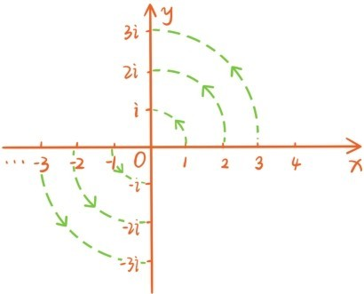
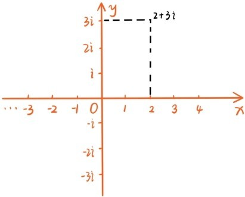
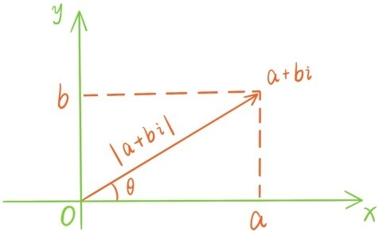
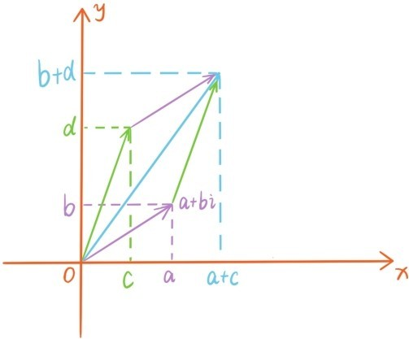

即使是今天的学生，首次接触虚数i，也会有虚幻的感觉，为了尽早破除读者对虚数i的虚幻印象，我们首先讲述虚数i的几何意义。
众所周知，实数和数轴上的点是一一对应的，而且，所有实数都乘以-1相当于是让整个数轴旋转180°。但是现在两个i的乘积才等于-1，也就是说，每个实数连乘i两次的效果才相当于让整个数轴旋转180°，那么，所有实数乘i一次的效果是不是就相当于让整个数轴旋转90°？

这时
…，-4，-3，-2，-1，0，1，2，3，4，…
变成了
…，-4i，-3i，-2i，-i，0，i，2i，3i，4i，…
所以上面这些数对应的位置应该在坐标平面的y轴上。那么一般的复数a+bi对应的位置应该是哪里呢？

相信不少读者已经猜到了，对应的位置就是平面上坐标为(a,b)的点。
好了，现在可以把实数与数轴的对应扩充一下，变成复数和坐标平面上的点一一对应。所以，平面的平移变换
平面向量(a,b)，有序数对(a,b)，复数a+bi和平面上的点之间可以建立起一连串的一一对应关系。
复数和坐标平面上的点的对应可以引申出复数z=a+bi的几个基本概念。a和b为复数z=a+bi的实部和虚部，分别记作Rez=a，Imz=b。虚部不为零的复数称为虚数，比如2+i，-1+i都是虚数；实部为零的虚数称为纯虚数，比如5i，-2i。

非零复数的幅角，指的是从原点出发到点a+bi的射线角度，也就是上图标记θ的角。约定复数z=0的幅角可以是任意的。复数的模，指的是点a+bi到原点的距离，记作|a+bi|。根据平面两点的距离公式，|a+bi|=。在复数与向量的一一对应之下，复数的模就是向量的模。
复数的加法是定义为：(a+bi)+(c+di)=a+c+(b+d)i。在复数与向量的一一对应之下，复数的加法正是对应着向量的加法。

所以复数加法在平面上也可以用平行四边形法则得出，也有复数的三角不等式|z1+z2|≤|z1|+|z2|，等号成立当且仅当z1与z2的幅角相同。每个复数z=a+bi都有一个相反数-z=-a-bi，由此可以派生复数的减法
z1-z2=z1+(-z2)。
复数的减法与向量的减法相对应，所以如果坐标平面上两个点A和B对应的复数分别是z1和z2，那么向量对应的复数就是z2-z1。
提问时间
8.1.1 计算(2+3i)-(1-3i)与(-1+4i)+(-2-i)。
8.1.2 坐标平面上，两个点A和B对应的复数分别是-2+i和3-2i，向量对应的复数是-1+2i，求向量对应的复数。